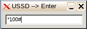

Если у вас в системе установлен модуль upNet.xzm, то после загрузки рабочего стола в трее вы увидите стандартный значок gtk-network (обведён красным).
Левый клик по этому значку отобразит все сетевые интерфейсы. При первом подключении это выглядит так:
Если кликнуть например проводное подключение, то через непродолжительное время вы получите такой ответ:
Или такой, в случае ошибки:
* В данном случае просто отключен провод
Зелёный значок означает, что интерфейс подключен. В данном примере подключен проводной интернет.
Клик по чёрному значку подключит выбранный интерфейс. При этом подключенное до этого будет отключено. В данном примере 3G-модем Huawei-173 "Мегафон". Клик по зелёному отключит всё.
Итог: программа позволяет легко находить сетевые интерфейсы и производить переключения между ними в один клик. Запоминается последнее состояние подключений (при условии сохранения сессии).
Правый клик по значку в трее вызовет меню настроек "PPPoE" и "Static IP"
Если у вас "нормальный" првайдер, то достаточно заполнить первую страничку. Имя соединения можно написать любое, логин и пароль выдаёт провайдер (обычно указывается в договоре).
Вторая страничка заполняется если у провайдера нет поддержки автоматической выдачи адресов. В таком случае IP и DNS надо узнавать у провайдера.
Некоторые "хитрые" провайдеры требуют для подключения указывать имя сервиса. Имя концентратора иногда требуется если в сети несколько концентраторов доступа PPPoE.
После настройки программа запомнит подключение и в следующий раз соединение произойдёт автоматически. Главное не забыть создать файл сохранения.
Для настройки статических адресов надо заполнить такую форму:
Не бойтесь ошибиться, ошибки не сохраняются а на них указывает уведомление:
Для проверки счёта модема и других ussd-запросов есть кнопка "Запрос USSD". Клик по ней вызывает поле ввода запроса
